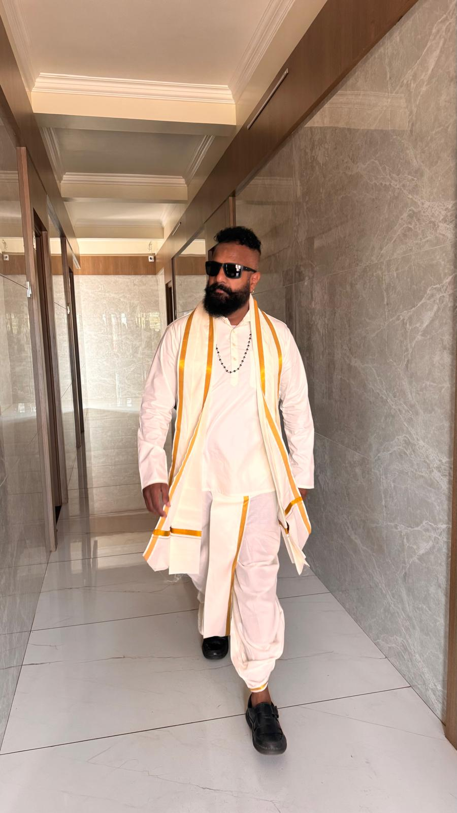

Balaji Prakash Rao is an inspiring leader and humanitarian dedicated to creating a safe and loving home for orphaned and destitute girls. Together with his wife Kavitha, he founded Kanavagam with the belief that every child deserves the love, care, and opportunities of a family.
Through his vision and compassion, Kanavagam has become a place where children receive education, healthcare, emotional support, and the confidence to build a bright future.
"Kanavagam was built on the belief that love, care, and education can transform a child's future."